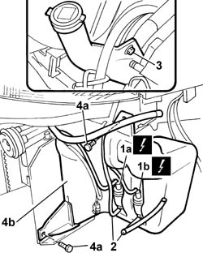

5050A10 WINDSCREEN WASHER FLUID RESERVOIR (IN ENGINE BAY) - R+R
- Path
- Procedures > 50 AUXILIARY UNITS > 5050 SCREEN WASHERS AND HEADLAMP WASH/WIPE > 5050A WINDSCREEN AND HEADLAMP WASHER RESERVOIR > 5050A10 WINDSCREEN WASHER FLUID RESERVOIR (IN ENGINE BAY) - R+R
- Kind
- repair procedure (removal / refitting; the operation number is the code)
- Applies to
- all engines; all production periods
- Interactive page
- https://sloeber94.github.io/elrnDB-fDct/en/#/244001315
Applies to: all engines; all production periods
 Removing
Removing
 Refitting
Refitting- Disconnect the negative battery terminal.
Op. 4450B12 FRONT OR REAR WHEELS (TWO) - R+R
Op. 7055B64 LH OR RH REFLECTOR(ONE) ON REAR BUMPERS - R R
- < R1 > - [On both sides]
Op. 7055B54 UNDER-ENGINE GUARD - R R
1. Disconnect the electrical connection for the water supply pump to the windscreen washer jets (1a) and for the water supply pump to the headlamp washer jets (1b).
 | Description | Connector |
|---|---|---|
1a | Electric windscreen washer pump motor | N020 |
| Description | Connector |
|---|---|---|
1b | Headlamp washer pump motor | N025 |
2. Disconnect the pipes from the windscreen washer pump and from the headlamp washer jet.
3. Undo the upper bolt fixing the reservoir.
- Partly raise the vehicle on the lift.
4. Undo the bolts (4a) fixing the headlamp and windscreen washer fluid reservoir (4b).
- Remove the windscreen washer fluid reservoir.
- At the bench, separate the electric windscreen washer and headlamp washer pumps from the reservoir.

Applies to: all engines; all production periods
Refitting
Removing- Fasten the windscreen and headlamp washer pumps to the reservoir.
- Place the reservoir in the correct position for refitting.
- Fasten the reservoir to the bodyshell tightening the fixing bolts.
- Raise the vehicle on the lift.
- Connect the pipes to the windscreen and headlamp washer pumps.
- Connect the electrical connection for the water supply pump to the windscreen washer jets and for the water supply pump to the headlamp washer jets.
| Description | Connector |
|---|---|---|
. | Electric windscreen washer pump motor | N020 |
| Description | Connector |
|---|---|---|
. | Headlamp washer pump motor | N025 |
Op. 7055B54 UNDER-ENGINE GUARD - R R
Op. 7055B64 LH OR RH REFLECTOR(ONE) ON REAR BUMPERS - R R
- < R1 > - [On both sides]
Op. 4450B12 FRONT OR REAR WHEELS (TWO) - R+R
- Check the level of the fluid in the reservoir and top up if necessary.
- Connect the negative battery terminal.